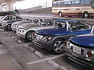
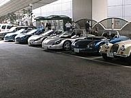
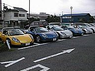
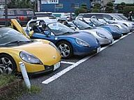

|
|
|
１９９９年８月２９日
東京 |
 |
|
 |
|
|
|
 |
|
 |
月刊外車雑誌“ウィズマン”に、自身のスピダーのレポートを連載しているフリーの
ライター高根氏とコンタクトを取る事ができ、急遽東京近郊のスピダー乗りが集まる事になりました。
急な話で連絡が取れなかった人も居るのですが、それでも待ち合わせ場所の
首都高芝浦ＰＡにソットヴァン１台、パラブリーズの４台で青３台シルバー２台
計５台のスピダーが集まりました。
写真にもあるようにモーガンが来たり、爆音Ｆ３５５が来たりと日曜のＰＡはすごい
ことになってました（笑）
しばらくして、都内のルノー専門店“ラ・フリーク”に場所を移し、このショップの社長でスピダーオーナーでもある竹田氏を交えて話をした後、さらに移動し、加平のファミレスで高根氏と合流しました。
業界に詳しい方ならではの面白い話を聞いたりしていましたが、気が付くと外は
どしゃ降りの雨と雷の夕立に・・
みんな慌てて防雨対策をしますが、何故かあの恥ずかしいビニールトップを付けた人は誰も居ませんでした
雨はますます酷くなり外にも出れない状態・・仕方なく雨が小降りになるまで待つ
事にしました。
結局３時間待ったところで雨はようやく上がり、ＦＢＭでの再会を約束して解散と
なりました。 |
|
（報告 すぴ） |
|
|